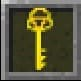
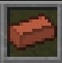
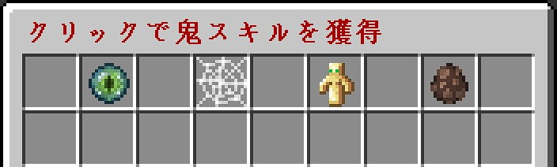
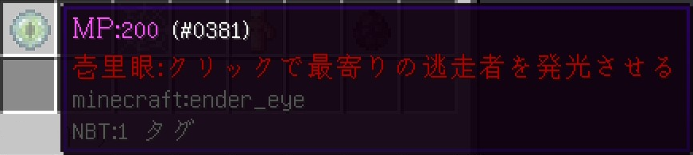
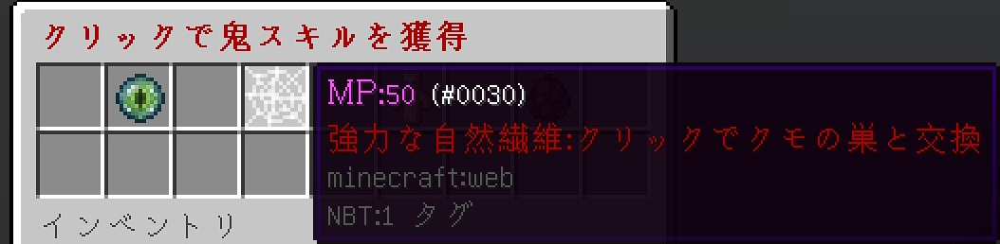
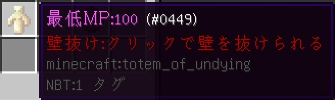

脱出迷路MODE
2021.8.12
2021.9.6
ルール
- 最初に鬼を一人決めてから始めます。
- ゲーム時間は1回30分
- 逃走者はダンジョン内のチェストのお助けアイテムを駆使して鬼から逃げます。
- 鬼は逃走者を倒します。
- MPは1秒で1増えます。
- 開始時にランダムで鬼の強さや脱出ピッケルの値段が決められます。
| Lv. | 攻撃力 | 防御 | 速度 | 脱出ピッケルのコスト |
|---|---|---|---|---|
| 100 | +4 | +12 | -50% | 16 |
| 200 | +6 | +15 | -20% | 24 |
| 300 | +9 | +18 | 逃走者と同速度 | 32 |
| 400 | +13 | +21 | +20% | 40 |
| 500 | +18 | +24 | +50% | 48 |
| 600 | +24 | +27 | +100% | 56 |
| 700 | ワンパン | +30 | +180% | 64 |
逃走者
- ゲーム開始時に「 鍵 」、「 MENU 」、「 TNT破壊ツール 」が配られます。
- ダンジョン内にあるチェストは、「鍵」で開けることができ、中には「金インゴット」とお助けアイテムが入っています。
-
「金インゴット」はダンジョン内にランダムで配置される「村人」と「脱出ピッケル
 」などと交換できます。
」などと交換できます。
- ダンジョン内に出現する「丸石の壁」を壊して脱出！
「鍵」・・・ダンジョン内にあるチェストをあけることができます。中にはいろいろなお助けアイテムを入手できます！
「MENU」・・・銃の弾丸が買えます！
左から「 弾丸1個 」、「 弾丸4個 」、「 弾丸16個 」、「
今のMPで買える最高個数 」が買えます。
「TNT破壊ツール」・・・ダンジョンの中にあるTNT部屋のTNTを破壊できます！
鬼
「MENU」・・・お助けアイテムが買えます！
左から「 壱里眼 」、「 強力な自然繊維 」、「 壁抜け 」、「 村人移動 」が買えます。

「壱里眼」消費MP200
最寄りの逃走者を発光させる。

「強力な自然繊維」MP50
設置できる蜘蛛の巣を入手。鬼は遅くならない。

「壁抜け」MP
壁をMP消費で一定秒抜けられるようになる。

「村人移動」MP500
村人の位置をランダムに移動させる。

チェストの中身
| 名称 | 画像 | 効果 | お助けアイテム |
|---|---|---|
| 金インゴット | 村人と「脱出ピッケル」などを購入するときに使用する。 |
| 名称 | 画像 | 効果 | ポーション |
|---|---|---|
| 暗視のポーション | .png) |
暗視（5分） |
| 無敵のポーション | 無敵耐性（10秒） | |
| 可視透明のポーション | 透明化（1分）もやもやが鬼に見える。 | |
| 体力増強のポーション | 体力増強Ⅲ（30分 最大体力が+12） | |
| 無酸素のポーション | .png) |
火炎耐性（30分）・水中呼吸Ⅱ |
| エリクサー | 即時全回復 | |
| ウサギのポーション | 跳躍力上昇Ⅱ（30分） | |
| 効率のポーション | 採掘速度上昇（1分） | |
| 吐き気・盲目解除のポーション | 吐き気・盲目解除 | |
| 静脈血 | 攻撃力上昇（2分 攻撃力+3） | |
| 自由のポーション | 鈍化から解放される | |
| ふわふわのポーション | 浮遊（1分） | |
| 跳躍のポーション | 跳躍力上昇（1分） | |
| 動脈血 | 攻撃力上昇Ⅱ（45秒 攻撃力+6） | |
| 再生のポーション | 再生能力（1分） | |
| 対消滅のポーション | 採掘速度上昇（10秒） 爆発は起きません。 | |
| 衝撃吸収のポーション | 衝撃吸収（30分） | |
| 神隠しのポーション | 鬼のスキル「壱里眼」で見えなくなる。 | |
| 不可視透明のポーション | 透明化（1分）もやもやが鬼に見えない。 |
| 名称 | 画像 | 効果 | スプラッシュポーション |
|---|---|---|
| 水のスプラッシュポーション | 効果はない。 | |
| 足止めのスプラッシュポーション | 移動速度低下（1分 移動速度上昇-15%） | |
| 凍結のスプラッシュポーション | 移動速度低下（10秒 移動速度上昇-105%） | |
| 吐き気のスプラッシュポーション | 吐き気（1分） | |
| 吐き気のスプラッシュポーション | 吐き気（3分） | |
| 盲目のスプラッシュポーション | 盲目（1分） | |
| 盲目のスプラッシュポーション | .jpg) |
盲目（3分） |
| 弱体化のスプラッシュポーション | .jpg) |
弱体化（18秒） |
| 退行のスプラッシュポーション | 弱体化（30秒 攻撃力-36） | |
| 老化のスプラッシュポーション | 弱体化（30秒 攻撃力-20） | |
| 負傷のスプラッシュポーション強 | 即時ダメージⅡ | |
| 昇天のスプラッシュポーション | 浮遊（10秒） | |
| 空腹のスプラッシュポーション | 空腹（3分） | |
| 無敵のスプラッシュポーション | 耐性（10秒） | |
| 即時回復薬 | 即時回復 | |
| 蟠桃汁 | 即時回復 | |
| パナケイアのスプラッシュポーション | 再生能力（10秒） | |
| フグ毒 | 吐き気Ⅱ（15秒）・空腹Ⅲ（15秒）・毒（1分） | |
| 失明のスプラッシュポーション | |
吐き気（1分）・盲目（1分） |
| アルミン酸ストロンチウム蛍光体のスプラッシュポーション | 発光（1分） | |
| 発光のスプラッシュポーションＢ型 | 発光Ⅱ（3分） | |
| 発光のスプラッシュポーションＣ型 | .jpg) |
透明化・発光Ⅱ（18秒） |
| 鈍化のスプラッシュポーションＣ型 | 移動速度低下（18秒 移動速度上昇-105%） | |
| 浮遊のスプラッシュポーションＡ型 | 浮遊（3分） | |
| 浮遊のスプラッシュポーションＢ型 | .jpg) |
浮遊（18秒） |
| 空腹のスプラッシュポーションＣ型 | 空腹（18秒） | |
| 毒のスプラッシュポーションＢ型 | 毒Ⅲ（3分） | |
| 毒のスプラッシュポーションＣ型 | 毒（18秒） |
| 名称 | 画像 | 効果 | 残留ポーション |
|---|---|---|
| 目薬 | 暗視（1分15秒） | |
| 負傷残留の残留ポーション | 即時ダメージ | |
| 凍結の残留ポーション | 移動速度低下（1秒 移動速度上昇-105%） | |
| 耐性の残留ポーション | 耐性（2秒） | |
| 金リンゴの残留ポーション | 再生能力Ⅲ（5秒） | |
| メタノール | 吐き気（15秒）・盲目（15秒）・弱体化（15秒）・衰弱（7分30秒）逃走者がかかったらいずれ死ぬ | |
| 平和な残留ポーション | 移動速度成果・吐き気・再生能力Ⅲ（5秒）・耐性（5秒）・盲目・弱体化（5秒）（移動速度上昇-990% 攻撃力-44） |
| 名称 | 画像 | 銃 |
|---|---|
| 弾丸 | |
| 刀α Major_exe |  |
| 刀α hopig | |
| AK-47 | |
| サブマシンガン | |
| ショットガン | |
| スナイパーライフル | |
| アサルトライフルⅡ | |
| ナイフ | |
| グレネードランチャー | |
| ハンドガン | |
| アサルトライフル=Type-89= | |
| ロケットランチャー |  |
| アサルトライフル=FAMAS= | |
| マシンガン | |
| ミニガン |  |
| アサルトライフル=SCAR= | |
| HOWA 5.56mm | |
| =M89= スナイパーライフル | |
| 戦斧 | |
| アサルトライフルⅠ |
Crack Shot
Crack Shotを導入しているので誰でもMinecraftで銃が使えます！
もっと臨場感を味わいたいときには、からFADサーバー公式リソースパックを導入してください。
導入方法が分からない場合は、こちらを参考にしてください。
待ち時間に待合室にある「射撃場」で中の試し打ちができます。

射撃場